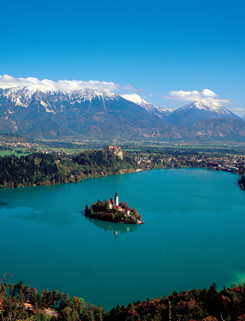
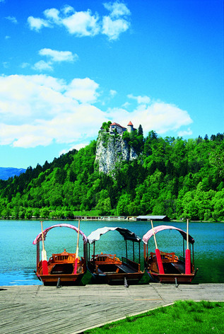
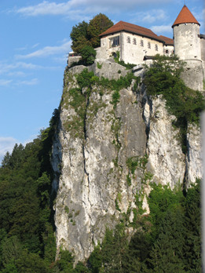
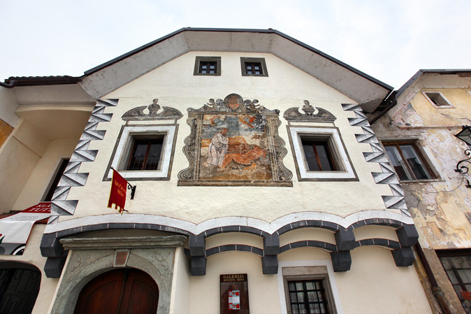
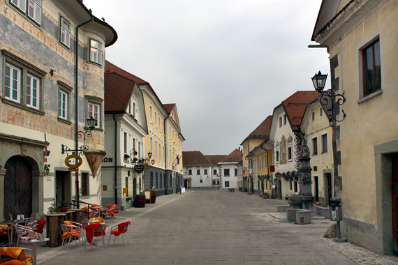
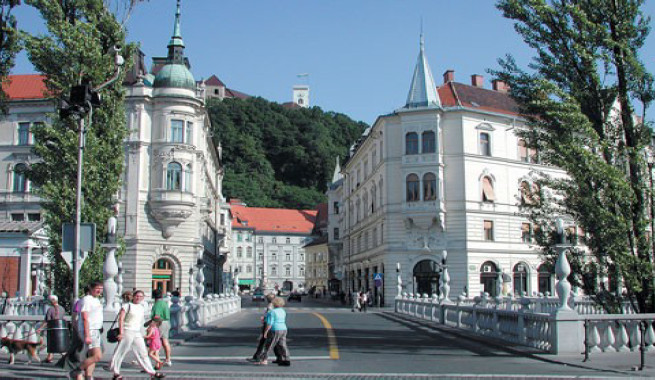

On the first day of the meeting (March 11), the seminar participants will spend their afternoon in informal discussions and networking while enjoying the guided sightseeing tour of the neighborhood of Lake Bled and the nearby town of Radovljica. The excursion will be concluded by the Seminar Gala Dinner in one of the restaurants of Radovljica.
Bled and its surroundings, with their immense naturalb eauty, rank among the most beautfiul European alpine resorts. It is unique with its emerald-green lake, a church on the tiny island in the middle of the lake, and a medieval 11th Century castle perched off a cliff above the lake. The guided tour will start with a boat ride to the island and a visit of the island's church with its famous wishing bell. Then a bus will take the tourists around the lake (with a tour in the Bled castle) and to the charming medieval town of Radovljica where the tourists will learns omethigna bout the historical traditions and activities in the area.
  After seeing the sights of the area, the seminar social program will be concluded by the Gala Dinner in one of the characteristic restaurants of Radovljica. After the dinner, the group of the seminar participants and their companions will be brought by bus back to the hotel in Bled.
 The cost of the entire package (the sightseeing tour and the Gala Dinner) is 79 euros per person. To help the local organizers arrange for this social program in an efficient and timely manner, the seminar participants are kindly asked to register for it in advance, as early as possible.
| 14:00 | a meeting with a local guide in Hotel Lovec |
| 14:10-15:10 | a boat ride to the island, visit to the church, return to the mainland |
| 15:20-17:00 | a bus ride around the alke, visit to the Bled castle |
| 17:20-18:30 | town tour in Radovljica (including visit of "Ginger Bread Museum" workshop) |
| 18:30-21:00 | Gala Dinner in Radovljica |
| 22:00 | return to Hotel Lovec |
This 4-hour bus tour (with a local English-speaking guide) can be organized for the seminar participants and their companions on Friday, March 13, 2015. Dependening on the preferences of the tourists, it may be arranged either for morning, or for afternoon hours; the latter could include dinner in one of the restaurants in Ljubljana. In order for the tour to take place, the group should consist of a minimum of 8 people, and it should be formed before March 2, 2015.
Those who are interested in the Ljubljana City Tour are kindly asked to indicate their interest on the Registration Form.